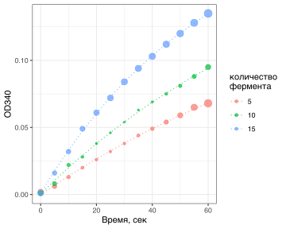

Регрессия позволяет нам сделать модель, которая способна извлекать из данных информацию о характере завимисимости, а также потом делать предсказания для неизвестных значений данных. Это “умение” моделей можно использовать, например, при дизайне эксперимента. Если мы изучим, например, различные условия для наибольшей активности фермента (или для экспрессии белка), то собрав несколько экспериментальных точек с разными условиями мы сможем предсказать такое сочетание, которое бы дало наиболее высокий выход.
Здесь описывается как это работает на примере максимизации выручки магазина, если мы меняем такие параметры, как цена на товар и высота расположения товара на полке.
Для некоторых случаев зависимость нельзя описать полиномом, либо зависимость описывается хорошо известным нелинейным уравнением. Для этого используется другая разновидность регрессии - нелинейная.
Типичными примерами, когда требуется использование нелинейной регрессии, являются
Рассмотрим несколько примеров.
Классическая задача - определение скорости реакции при разных условиях (например, при разной концентрации фермента). В данном примере речь идет об определении начальной скорости реакции образования 1,3-ФГК, каталицируемой ГАФД, по кривым увеличения оптической плотности при 340 нм в результате образования NADH (пример с практикума по энзимологии на 3 курсе).
Активность ГАФД определяли спектрофотометрически при 340 нм по увеличению оптической плотности в результате образования NADH. Реакционная среда для определения активности ГАФД состоит из 0,1 М глицинового буфера (pH 8,9), 5 мМ ЭДТА, 1 мМ NAD+, 5 мМ Na3AsO4 и ГАФД (3 мл среды в кювете). Реакцию начинали внесением ГАФД. Вместо неорганического фосфата использовали арсенат, для того, чтобы сдвинуть реакцию в сторону образования продуктов, поскольку 1-арсенат-3-ФГК легко распадается на арсенат и 3-ФГК. Количество фермента подбирали экспериментально.
Откроем данные. В первой колонке - время измерения, сек. В остальных колонках - измерения (OD340) для разных количеств фермента, мкл.
# данные лежат в https://github.com/lapotok/biochemstat2019/tree/master/data
GAPDH_curves = rio::import("data/GAPDH_kinetic_curves.csv")
# Преобразуем файл в "длинный формат"
GAPDH_curves_long =
GAPDH_curves %>%
pivot_longer(-time, "group") %>%
mutate(group = factor(group, levels=c(5,10,15)))
# Посмотрим на исходные данные
GAPDH_curves_long %>%
ggplot(aes(x=time, y=value, col=group)) +
geom_point(alpha=.7, size=2) +
labs(title="", x="Время, сек", y="OD340")Теперь смоделируем каждую кривую и посмотрим на значения подобранных коэффициентов. Для моделирования этих кривых используем функцию AR.3(), обозначающую асимптотическую функцию (также в пакете drc имеется большое разнообразие других функций для других кривых - можно смотреть, какая функция подойдет лучше для конкретных нужд).
\[ f(t) = c + (d-c) \cdot \Big(1 - \exp\big(-t/e\big)\Big) \]
m = drm(value ~ time, # формула
group, # идентификаторы групп
data = GAPDH_curves_long, # данные
fct=AR.3()) # асимптотическая функция, которую используем для подгонки модели
m##
## A 'drc' model.
##
## Call:
## drm(formula = value ~ time, curveid = group, data = GAPDH_curves_long, fct = AR.3())
##
## Coefficients:
## c:5 c:10 c:15 d:5 d:10 d:15
## -1.612e-04 3.751e-04 7.572e-04 1.776e-01 2.143e-01 2.161e-01
## e:5 e:10 e:15
## 1.234e+02 1.039e+02 6.168e+01Мы видим, что для каждой концентрации определились свои коэффициенты. Создадим предсказания с помощью построенной модели и изобразим их на графике.
# создаем таблицу с исходными данными по предсказаниям
pred_grid = expand.grid(group = levels(GAPDH_curves_long$group), time = seq(0, 60, length=100))
pred_grid$predicted = predict(m, newdata = pred_grid)
pred_grid %>% head()## group time predicted
## 1 5 0.0000000 -0.0001612345
## 2 10 0.0000000 0.0003750892
## 3 15 0.0000000 0.0007571967
## 4 5 0.6060606 0.0007096038
## 5 10 0.6060606 0.0016195309
## 6 15 0.6060606 0.0028624263# рисуем график
GAPDH_curves_long %>%
ggplot(aes(x=time, y=value, col=group)) +
geom_point(alpha=.7, size=hatvalues(m)*30) +
geom_line(aes(x=time, y=predicted), data=pred_grid, alpha=0.8, linetype="dotted") +
labs(x="Время, сек", y="OD340") + scale_color_discrete(name = "количество\nфермента")
Мы подобрали коэффициенты для построения модели всей кривой, для этого использовались все точки. При этом разные точки имеют разную важность для подбора коэффициентов. Точки большего размера (с краев диапазона) сильнее влияют на коэффициенты. Чем больше точек мы анализируем, тем больше информации получаем о форме кривой.
Теперь, если нам интересно оценить начальную скорость (касательную в нулевой точке) по полученной кривой, то мы можем использовать тот факт, что скорость - это производная концентрации по времени, \(v = dC/dt\). К счастью, зная формулу для описания кинетической кривой мы можем легко получить в R и формулу для производной.
m_deriv = D(expression(c + (d-c) * (1 - exp(-t/e))), 't')
m_deriv## (d - c) * (exp(-t/e) * (1/e))\[ \begin{aligned} v(t) & = \frac{d\bigg(c + (d-c) \cdot \Big(1 - \exp\big(-t/e)\Big)\bigg)}{dt} = (d-c) \cdot \exp\big(-t/e)\cdot(1/e) \\ v(0) & = (d-c) \cdot \exp\big(-0/e)\cdot(1/e) = (d-c) \cdot (1/e) \end{aligned} \]
Теперь по этой формуле мы можем вычислить начальную скорость для каждой кривой. А после этого можем построить прямую начальной скорости.
m_coeff = coef(m) # достаем коэффициенты
init_preds = tibble()
time_points = c(0, 60)
# считаем предсказания для начальной скорости
for (group in levels(GAPDH_curves_long$group)) {
intercept = m_coeff[paste0("c:", group)]
slope = (m_coeff[paste0("d:", group)] - m_coeff[paste0("c:", group)]) * (1/m_coeff[paste0("e:", group)])
tmp = tibble(
time = time_points,
group = group,
predicted = slope * time_points
)
init_preds = bind_rows(init_preds, tmp)
}
GAPDH_curves_long %>%
ggplot(aes(x=time, y=value, col=group)) +
geom_point(alpha=.7, size=hatvalues(m)*30) +
geom_line(aes(x=time, y=predicted), data=pred_grid, alpha=0.8, linetype="dotted") +
geom_line(aes(x=time, y=predicted), data=init_preds, alpha=0.8) +
coord_cartesian(ylim=c(0, 0.15)) +
labs(x="Время, сек", y="OD340") + scale_color_discrete(name = "количество\nфермента")А теперь было бы интересно сравнить те кривые, которые получились при расчете с использованием всех точек кривых (пунктир) и те, которые получились при попытках визуально отобрать наиболее линейный участок (линии без пунктира).
Можно заметить, что на глаз мы стремимся проводить более горизонтальные прямые. Мы считаем, что для большей достоверности нам нужно больше точек, однако в данном случае это черевато недооценкой реальной скорости. Метод с производной позволяет извлекать из всех точек информацию о нормальной скорости.
Уравнение Михаэлиса-Ментен используется для количественного описания ферментативной кинетики.
\[ v = \frac{V_{max} \cdot S}{K_M+S} = \frac{V_{max}}{{\large\frac{K_M}{S}}+1} \]
Готовая функция MM.2() из пакета drc служит для моделирования кривых Михаэлис-Ментен. Она имеет следующие параметры:
\[ \begin{aligned} & y = \frac{d}{{\large\frac{e}{x}+1}} \\ & y = v \\ & d = V_{max} \\ & e = K_M \\ & x = S \end{aligned} \]
В качесте примера рассмотрим задачу определения ферментативной кинетики с практикума по энзимологии на 3 курсе (определение каталитической активности ЛДГ по пирувату). Для каждой концентрации пирувата (s, мМ) имеется измерение скорости реакции (v, мкмоль/мин).
# данные доступны на https://github.com/lapotok/biochemstat2019/tree/master/data
d = rio::import("data/LDH_km_vmax.csv")
# преобразуем исходные данные в координаты
# А) Лайнуивера-Берка, Б) Иди-Хофсти
d %<>%
mutate(is=1/s, iv=1/v, vs=v/s)
# посмотрим на исходные данные в разных координатах
p_sv =
ggplot(d, aes(x=s,y=v)) +
geom_point(alpha=.6, size=2, col="dodgerblue") +
labs(subtitle = "Координаты Михаэлиса-Ментен")
p_isiv =
ggplot(d, aes(x=1/s,y=1/v)) +
geom_point(alpha=.6, size=2, col="dodgerblue") +
labs(subtitle = "Координаты Лайнуивера-Берка")
p_vvs =
ggplot(d, aes(x=v/s,y=v)) +
geom_point(alpha=.6, size=2, col="dodgerblue") +
labs(subtitle = "Координаты Иди-Хофсти")
plot_grid(p_sv, p_isiv, p_vvs, nrow = 1)Можно заметить, что в разных координатах
Таким образом, используемые методы линеаризации искажают структуру ошибок и приводят к нарушению предпосылок для использования линейных моделей.
На графиках ниже можно видеть кривые, подобранные разными методами. Разная величина точек отражает разный вклад (вес) этих точек в результат подбора коэффициентов кривой разными методами (для нелинейной регрессии вклад всех точек примерно одинаков, т.е. выше устойчивость к выбросам единичных точек). Для этих данных адекватные кривые получились с помощью метода нелинейной регрессии и линеаризации Иди-Хофсти (которых на других данных с большим вкладом ошибок может быть менее надежен).
m_mm = drm(v ~ s, data = d, fct = MM.2(names = c("Vmax", "Km"))) # red
m_lb = lm(iv ~ is, data = d) # blue
m_eh = lm(v ~ vs, data = d) # green
new_s = with(d, seq(min(s), max(s), l=200))
new_vs = with(d, seq(min(vs), max(vs), l=200))
predictions = data.frame(s=new_s, is=1/new_s, vs=new_vs)
predictions$mm = predict(m_mm, newdata = predictions)
predictions$lb = 1/predict(m_lb, newdata = predictions)
predictions$eh = predict(m_eh, newdata = predictions)
predictions$s_eh = predictions$eh/predictions$vs
predictions %>%
pivot_longer(-(s:vs)) -> predictions_long
# mm leverage
p_sv_mm =
ggplot(d, aes(x=s,y=v)) +
geom_point(aes(size=hatvalues(m_mm)), alpha=.6, col="dodgerblue") +
geom_line(aes(x=s, y=mm), data=predictions, col="red", alpha=.5) +
labs(subtitle = "AR.3():\nвеса точек и итоговая модель") +
theme(legend.position = "none")
p_sv_lb =
ggplot(d, aes(x=s,y=v)) +
geom_point(aes(size=hatvalues(m_lb)), alpha=.6, col="dodgerblue") +
geom_line(aes(x=s, y=lb), data=predictions, col="orange", alpha=.5) +
labs(subtitle = "Метод Лайнуивера-Берк:\nвеса точек и итоговая модель") +
theme(legend.position = "none")
p_sv_eh =
ggplot(d, aes(x=s,y=v)) +
geom_point(aes(size=hatvalues(m_eh)), alpha=.6, col="dodgerblue") +
geom_line(aes(x=s_eh, y=eh), data=predictions, col="green", alpha=.5) +
labs(subtitle = "Метод Иди-Хофсти:\nвеса точек и итоговая модель") +
theme(legend.position = "none")
plot_grid(p_sv_mm, p_sv_lb, p_sv_eh, nrow = 1)m_mm##
## A 'drc' model.
##
## Call:
## drm(formula = v ~ s, data = d, fct = MM.2(names = c("Vmax", "Km")))
##
## Coefficients:
## Vmax:(Intercept) Km:(Intercept)
## 0.11593 0.08567Пример с октетом
Множество биологических процессов описывается S-образной кривой. Характерным примером является зависимость сигнала (оптическая плотность, флуоресценция, фосфоресценция и т.п.) от концентрации при анализе с помощью различных иммуноэссеев.
Мы рассмотрим пример построения нелинейной модели для S-образной калибровочной кривой. Зачастую исследователи находят линейный участок кривой и ограничиваются им, однако использование всех точек позволяет точнее установить форму зависимости и получить меньшие ошибки. Такой анализ будет нечувствителен к субъективному выбору точек для “линейного участка”.
\[ signal = c + \frac{d-c}{\bigg(1 + \exp\Big(b\cdot\big(\log(conc)-\log(e) \big)\Big)\bigg)^f} \]
В данной формуле все параметры имеют интерпретируемое значение: \(b\) - наклон кривой (“крутизна”), \(c\) - нижняя асимптота по оси (минимальный сигнал), \(d\) - верхняя асимптота (максимальный сигнал), \(e\) - сдвиг кривой по оси концентрации, \(f\) - ассиметричность кривой относительно точки изгиба.
# данные с https://github.com/lapotok/biochemstat2019/tree/master/data
calibr = rio::import("data/igfbp4_3_cal_curve.csv")
# для моделирования используем 5PL функцию
m_drc = drm(signal ~ conc, data=calibr, fct=LL.5())
m_drc##
## A 'drc' model.
##
## Call:
## drm(formula = signal ~ conc, data = calibr, fct = LL.5())
##
## Coefficients:
## b:(Intercept) c:(Intercept) d:(Intercept) e:(Intercept) f:(Intercept)
## -5.133e+00 1.607e+03 1.069e+06 5.348e+01 2.694e-01# predictions
new_x = exp(seq(log(0.05), log(100), l=200))
pred = predict(m_drc, newdata = data.frame(conc=new_x), interval = "prediction")После фитирования наложим предсказанные кривые на экспериментальные точки. Видно, что на всем диапазоне линия проходит близко к точкам, незначительные выбросы не оказывают влияние на форму кривой.
Отметим, что традиционный способ построения модели основан на наблюдении, что у раститровки в двойных логарифмических координатах есть так называемый “линейный участок”, т.е. участок, который в двойных логарифмических координатах выглядит линейным. Разброс (дисперсия) в этих координатах выглядит равномерной (часто), а в прямых координатах он растет с увеличением измеряемых значений сигнала. При этом либо ищется линейная зависимость в двойных логарифмических координатах (степенная функция) \(log(\text{signal}) = a + b \cdot log(\text{conc})\), либо подбираются коэффициенты для степенной функции \(\text{signal} = e^a \cdot \text{conc}^b = a^* \cdot \text{conc}^b\).
Что с этим способом не так?
После того, как калибровка построена (нелинейная модель с 5 параметрами), можно определить по ней концентрацию в пробе с неизвестной концентрацией.
# данные с https://github.com/lapotok/biochemstat2019/tree/master/data
titrated_sample = rio::import("data/igfbp4_3_titrated_sample.csv")
# сохраняем предсказания
predicted_diluted =
ED(m_drc, # модель для рассчета
respLev = titrated_sample$signal, # для каких значений сигнала предсказываем концентрацию
interval = "delta", # нужен ли доверительный интервал
type = "absolute", # задаем абсолютные значения сигнала, а не проценты
display = F)
# пока у нас предсказания для разбавлений образца
predicted_diluted %<>% as_tibble()
# пересчитаем то же для неразбавленного образца
predicted_undiluted = predicted_diluted * titrated_sample$dilutionНекоторые точкми выпали из калибровки, некоторые имеют очень большую ошибку. Почему так происходит? Если мы наложим на кривую интервалы предсказаний для всех уровней сигнала для всех разведений образца, то мы увидим, что некоторые образцы слишком концентрированы и находятся на уровне нуля или плато кривой (отсюда большая ошибка), либо даже выходят за эти рамки (отсюда выпадение из калибровки). По величине ошибок предсказаний можно посмотреть, каким точкам стоит доверять. Мы также можем грубо прикинуть по правилу 1.5 IQR, какие из точек являются выбросами (в R это можно сделать командой boxplot(x, plot = F)$out); на графике красным отмечены выбросы.
Если пересчитать предсказанные концентрации в разбавлениях образца в исходную концентрацию, то мы сами можем увидить выбросы в полученных точках.
Также мы можем для каждой оценки образца в пересчете на исходную концентрацию посмотреть на ошибки предсказания. Явно, что выбросы надо убрать.
pr =
predicted_undiluted %>%
ggplot(aes(y=rowname, x=Estimate, xmin=Lower, xmax=Upper, col=titrated_sample$dilution)) +
geom_point(size =(titrated_sample$dilution)^(1/8)*1.5,
shape = shape_outlier) +
geom_linerangeh() +
scale_color_gradient(low = "blue", high="red", name="dilution") +
scale_y_continuous(breaks = 1:31) +
theme(axis.ticks.y = element_blank(),
axis.title.y = element_blank()) +
labs(subtitle = "Оценки концентрации и их ошибки")
prЧто же со всем этим делать? После удаления выбросов обычно люди усредняют оценки и выдают полученное число за искомую концентрацию в образце. Однако таким образом мы не сможем указать ошибку этой оценки, а также мы не принимаем в расчет то, что для каждой точки разведения у нас есть своя ошибка. Для того, чтобы сводить воедино несколько оценок с разными ошибками можно использовать мета-анализ.
Мета-анализ обычно используют, когда нужно обобщить результаты из нескольких исследований, от нескольких лабораторий.
При этом разные исследования могут быть попытками воспроизведения одной и той же методики на одном и том же объекте и получать оценку одной и той же величины. В таком случае, в разных исследованиях мы будем видеть случайные отклонения от единого истинного фиксированного значения эффекта (это мета-анализ фиксированных эффектов).
Однако также разные исследования могут пытаться перепроверить некую величину разными методами или на разных объектах (видах животных). Таким образом, оценки получаемые разными исследованиями будут отличаться не только ошибками измерения, но и различиями в объектах, методах - т.е. каждый раз будет измеряться какая-то своя величина со своей ошибкой. И в итоге анализ пытается установить, какую общую величину представляют все эти частные проявления величины, которые все эти исследования по-своему пытаются оценить (это мета-анализ случайных эффектов).
В используемом примере с оценками концентрации по разным точкам образца (одним и тем же методом, одна и та же проба) нас будет интересовать мета-анализ фиксированных эффектов.
suppressPackageStartupMessages(library(meta))
suppressPackageStartupMessages(library(metafor))
# возьмем первые несколько оценок
ix = 2:8
estimates = predicted_undiluted[ix,]
# запускаем мета-анализ
m_res = metagen(TE = estimates$Estimate, # точечные оценки
seTE = estimates$`Std. Error`, # ошибки
studlab = as.character(ix)) # названия для точек
# строим график
m_res %>% forest(xlim=c(50, 200))Видно, что данные точки хорошо согласуются друг с другом (т.к. в них не попали выбросы). Мы видим, что средняя оценка по результатам мета-анализа составило \(138.3\ [130.9, 145.72]\).
Однако если включить в анализ точки с выбросами, то они начинают “перетягивать” среднее в свою сторону. В данном случае мета-анализ случайных эффектов оказывается ближе к оценке без выбросов, т.к. он “воспринимает” отклонение выброса, как некую индивидуальную особенность данного “исследования” и не позволяет ей существенно искажать результат.
# возьмем первые 8 оценок
ix = 18:24
estimates = predicted_undiluted[ix,]
# запускаем мета-анализ
m_res = metagen(TE = estimates$Estimate, # точечные оценки
seTE = estimates$`Std. Error`, # ошибки
studlab = as.character(ix)) # названия для точек
# строим график
m_res %>% forest(xlim=c(0, 450))Корреляция проверяет наличие совместного возрастания/убывания значений какого-то признака. В отличие от регрессии она симметрична. Для измерения степени взаимосвязи используют коэффициент корреляции. Если взаимодействие линейно, то используют коэффициент линейной корреляции Пирсона, если наблюдается нелинейная монотонная взаимосвязь - ранговые коэффициенты корреляции. Если признаков много - можно расчитывать корреляции для каждой пары.
Значения коэффициентов корреляции находятся в области от -1 до 1. При этом значению 0 соответствует ситуация отсутствия корреляции, а чем больше значение по модулю, тем сильнее взаимодействие.
Градации коэффициента корреляции (по модулю, корреляция бывает положительная и отрицательная):
Кроме значения коэффициента очень важно смотреть на его статистическую значимость. Если значение незначимо <отличается от 0> (каким бы оно ни было) - значит мы ничего не можем сказать о силе корреляции. Наконец, всегда полезно смотреть на графики попарных взаимодействий, чтобы быть в курсе особенностей данных, которые не адекватно описываются коэффициентом корреляции, например, нелинейность данных.
Рассмотрим пример инструментов для анализа корреляций в R. Загрузим и подготовим данные.
# >>> https://rcompanion.org/handbook/I_10.html
# Brendon Small and company recorded several measurements for students in their classes
# related to their nutrition education program: Grade, Weight in kilograms, intake
# of Calories per day, daily Sodium intake in milligrams, and Score
# on the assessment of knowledge gain.
# данные с https://github.com/lapotok/biochemstat2019/tree/master/data
load("data/BrendonSmall_nutrition.RData")
# оставим только численные переменные
BrendonSmall_nutrition_num = BrendonSmall_nutrition %>% select(-Instructor)
BrendonSmall_nutrition_num %>% head()## Grade Weight Calories Sodium Score
## 1 6 43 2069 1287 77
## 2 6 41 1990 1164 76
## 3 6 40 1975 1177 76
## 4 6 44 2116 1262 84
## 5 6 45 2161 1271 86
## 6 6 44 2091 1222 87Посчитаем значения одного из коэффициентов корреляции и его уровня значимости.
# r and p-values
cor.test(BrendonSmall_nutrition_num[,5], BrendonSmall_nutrition_num[,4])##
## Pearson's product-moment correlation
##
## data: BrendonSmall_nutrition_num[, 5] and BrendonSmall_nutrition_num[, 4]
## t = -3.302, df = 43, p-value = 0.001938
## alternative hypothesis: true correlation is not equal to 0
## 95 percent confidence interval:
## -0.6566022 -0.1799772
## sample estimates:
## cor
## -0.449751Мы видим, что само значение коэффициента корреляции небольшое, но оно значимо отличается от нуля (см. доверительный интервал или p-value теста на равенство коэффициента корреляции нулю).
Можно посмотреть на таблицу всех коэффициентов корреляции, но без значимостей эти коэффициенты на мало о чем говорят!
# cor matrix
BrendonSmall_nutrition_num_cor = BrendonSmall_nutrition_num %>% cor(method = "pearson")
BrendonSmall_nutrition_num_cor %>% round(2)## Grade Weight Calories Sodium Score
## Grade 1.00 0.85 0.85 0.79 -0.70
## Weight 0.85 1.00 0.99 0.87 -0.48
## Calories 0.85 0.99 1.00 0.85 -0.48
## Sodium 0.79 0.87 0.85 1.00 -0.45
## Score -0.70 -0.48 -0.48 -0.45 1.00Построим графики попарных взаимодействий. Есть разные пакеты, которые показывают корреляции по-разному.
Построим просто точки. Можно для наглядности покрасить точки в цвета категорийного признака (для которого нельзя посчитать корреляции).
pairs(BrendonSmall_nutrition_num, col = BrendonSmall_nutrition$Instructor)Точки, зависимости, коэффициенты и их значимость.
PerformanceAnalytics::chart.Correlation(BrendonSmall_nutrition_num, method = "pearson")# пример с незначимыми коэффицентами
PerformanceAnalytics::chart.Correlation(iris[, 1:4], method = "pearson")Коэффициенты и их значимость.
iris_cor_p = corrplot::cor.mtest(iris[, 1:4], conf.level = .95)$p
corrplot::corrplot.mixed(cor(iris[, 1:4]), upper="ellipse", p.mat=iris_cor_p)